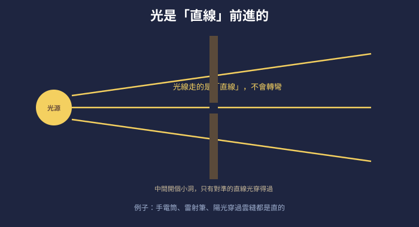
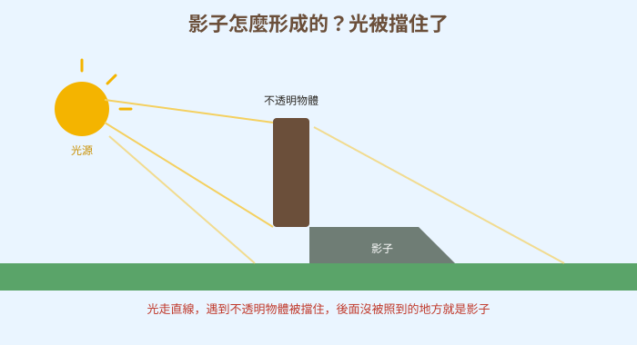
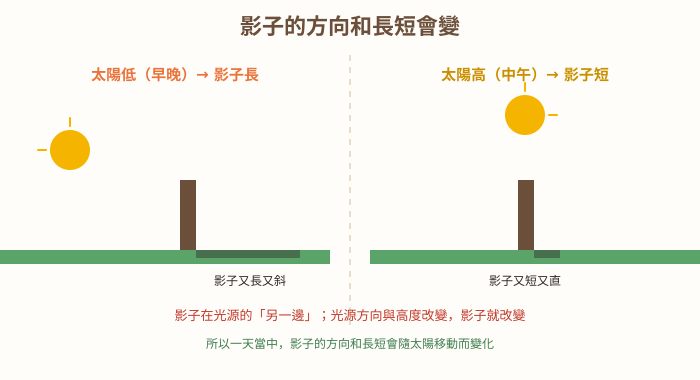

圖一（概念總覽圖）：光走直線

- 圖像目的
- 建立「光沿直線前進、不轉彎」的核心概念。
- 圖中應出現的元素
- 光源、以直線畫的光線、一片有小孔的擋板（只有對準的直線光穿過）。
- 必須標示的科學概念
- 光直進；只有直線對準才穿得過小孔。
- 圖說
- 「光線走的是直線，不會轉彎。」
- AI 繪圖提示詞
- 深色背景，左側光源發出數條「直線」光線，中間一片有小孔的擋板，只有對準小孔的直線光穿過。繁體中文標籤。
- 避免畫錯的提醒
- 光線一律畫成直線、不可彎曲；只有對準小孔的能穿過。
💡 影子不是「黑黑的東西」跟著你——它是光走直線、被你擋住留下的空缺！
| 適合年級 | 國小四年級 |
|---|---|
| 可銜接年級 | 四年級 → 五年級（探索聲光）→ 國中光學現象 |
| 主題分類 | 聲音、光與電 |
| 核心概念 | 光的直進；影子的形成與變化 |
| 關鍵詞 | 光、光源、直進、影子、不透明、透明、光源方向 |
| 可銜接的國中概念 | 光學現象（直進、反射、折射）、成像 |
| 建議閱讀時間 | 約 18 分鐘 |
| 適合搭配的課堂活動 | 手電筒影子實驗、竿影/日影觀察、手影遊戲 |
放學路上，太陽斜斜地掛在天邊，小狐同學突然發現地上有一個「黑黑的自己」，不管他走到哪，它就跟到哪。他往前跑，它往前追；他停下來，它也停；他舉起手，它也舉手。「喂！你這個跟屁蟲，別再學我了！」小狐同學生氣地想踩它、想跳開它，可是怎麼甩都甩不掉。
「太可怕了，」他跑去找甲蟲博士，「有一個黑黑的東西一直跟著我，我踩不到它、也甩不掉它，它是不是妖怪啊？」甲蟲博士忍不住笑：「那是你的『影子』啦！它不是妖怪，也不是黏在你身上的黑色東西，它其實是……光留下的一個空缺。」
小狐同學更糊塗了：「空缺？影子明明是黑的，怎麼會是空缺？」他抬頭看看太陽，又低頭看看自己那片長長的影子，發現一件怪事：早上上學時影子明明短短的在腳邊，怎麼放學時影子變得又長又斜，還跑到另一邊去了？「同一個我，影子怎麼一下短一下長、一下在這邊一下在那邊？它會自己變身嗎？」
黑熊老師拿著一支手電筒和一顆小球走過來，笑著說：「小狐，影子的祕密，藏在『光怎麼走』裡面。光這位旅客有個習慣——它只走直線，從不轉彎。只要搞懂這一點，你就會明白影子為什麼會出現、又為什麼會變長變短。來，我用手電筒和這顆球，變給你看！」
黑熊老師，影子到底是什麼？為什麼會一直跟著我？
影子是「光被擋住」形成的。光從光源（像太陽、手電筒）出發，走的是直線。當光遇到你這種「不透明」、光穿不過去的東西，你身體後面那塊照不到光的地方，就變暗，那就是影子。
所以影子不是「黑色的東西」，而是「沒被光照到的地方」？
沒錯！影子是「光照不到的空缺」。因為光走直線、不會轉彎繞到你背後，所以你背後就留下一塊暗暗的影子。這就是為什麼影子的形狀，會和擋光的物體差不多。
哼，我知道！影子是「黏在物體身上、屬於它的一部分」，所以物體走到哪影子就跟到哪，晚上關燈影子就躲起來了！它是物體養的小寵物啦！
又想錯囉，迷思怪獸。影子不是物體的一部分，也不是寵物。它是「光」被擋住才出現的。沒有光（例如全黑的房間），根本就不會有影子，不是影子「躲起來」，是它本來就需要光才會存在。
那為什麼我的影子早上短、放學長，還會換邊？
因為影子在光源的「另一邊」，光源的方向和高度一改變，影子就跟著變。太陽早上和傍晚位置低、斜斜地照，影子就被拉得又長又斜；中午太陽高高在上，影子就變短、在腳邊。太陽從東移到西，影子也跟著轉方向。
補充一個和影子有關的酷發明——「日晷」！古時候的人在地上立一根竿子，看它影子的方向和長短，就能知道大概幾點鐘，這是最早的「時鐘」之一喔。影子雖然常被當成配角，卻幫人類做了大事呢。
與其用聽的，我們來做手電筒影子實驗：把手電筒照一個小物體，觀察影子怎麼出現；然後移動手電筒的方向和遠近，看看影子怎麼變長變短、變方向！也可以玩手影遊戲，用手比出小狗、老鷹。實驗時別用手電筒或雷射照別人眼睛喔。
光從光源（太陽、手電筒）出發，走的是直線，不會轉彎。當光遇到不透明（光穿不過去）的東西，被擋住，物體後面照不到光的地方就變暗，這就是影子。所以影子是「光照不到的空缺」，不是黑色的東西。影子在光源的另一邊；光源方向或高度一變，影子的方向和長短就跟著變。
光在同一種介質中沿直線前進（光的直進）。當光遇到不透明物體被阻擋，物體後方無法被光照到的區域即形成影子，影子形狀與擋光物輪廓相關。透明物（玻璃）大部分讓光通過、幾乎不成影；半透明物成較淡的影。影子位於光源的相對側；光源的方向、高度與距離改變，影子的方向、長短與大小隨之改變（如一天中日影的變化）。這也是日晷計時的原理。
光的直進是幾何光學的基礎，可解釋影子、針孔成像與日月食。點光源在不透明物後方形成清晰的本影；面光源（如太陽有一定大小）會形成本影與半影。透明、半透明、不透明依透光程度不同而成影不同。光速極快，在真空中約 3×10⁸ m/s。國中會進一步學習光的反射（面鏡）、折射（透鏡、水中筷子看似彎折）與成像，光的直進是這些現象分析的起點。



（本篇分鏡場景插圖籌備中，以下為分鏡腳本；場景圖可依提示詞產出，作法同其他文章。）
| 適合年級 | 四年級 |
|---|---|
| 材料 | 手電筒（或手機手電筒）、小物體（積木、公仔）、白紙或白牆、尺、稍暗的房間、紀錄表 |
手電筒的位置與遠近／物體的透光程度。
影子的方向、長短大小、清楚或模糊、深或淡。
同一個物體與手電筒、房間亮度、白牆位置一致。
| 做法 | 影子的變化 |
|---|---|
| 手電筒往左移 | |
| 手電筒拿遠 | |
| 換成玻璃杯 |
手電筒往哪個方向移，影子就往另一邊變；手電筒拿近，影子變大；拿遠，影子變小。因為光走直線，物體擋住光在後方形成影子，光源位置改變，被擋的範圍就改變。不透明物體有清楚的影子；透明的玻璃杯讓光通過，幾乎沒有影子；半透明的紙有較淡的影子。這證明影子由光的直進與物體透光程度決定。
⚠️ 安全提醒：絕對不可以用手電筒、雷射筆照射別人的眼睛或自己的眼睛，強光會傷害視力；雷射筆尤其危險，非必要不使用；在安全的室內進行，小心不要在暗處絆倒。
👾 迷思說法：影子是「黑色的東西」，是物體身上黏著的一部分。
為什麼容易誤解：影子看起來黑黑的、又緊跟著物體。
✅ 正確說法：影子不是黑色的實體，也不是物體的一部分。它是「光被擋住、照不到的空缺」。
可以怎麼驗證：把光源移開或關掉，影子就消失了——它不是黏在物體上的。
👾 迷思說法：沒有光的全黑房間裡，影子只是「躲起來」了。
為什麼容易誤解：覺得影子一直存在，只是看不到。
✅ 正確說法：沒有光就根本不會有影子。影子需要光才會存在，不是躲起來，而是本來就沒出現。
可以怎麼驗證：在全黑房間裡，任何物體都沒有影子；一開燈影子才出現。
👾 迷思說法：光會轉彎繞過物體，所以物體後面也照得到光。
為什麼容易誤解：覺得光很厲害，什麼地方都到得了。
✅ 正確說法：光走直線、不會轉彎繞過去，所以物體正後方會被擋出一塊影子。
可以怎麼驗證：手電筒照一個盒子，盒子後面就是暗的影子，光沒有繞過去照亮它。
👾 迷思說法：影子的大小和形狀永遠不會變。
為什麼容易誤解：覺得影子就是物體的固定樣子。
✅ 正確說法：光源的方向、高度和遠近改變，影子的方向、長短和大小都會跟著變（像一天中的日影）。
可以怎麼驗證：移動手電筒，牆上的影子就明顯變方向、變大小。
👾 迷思說法：所有東西都會擋光、都有影子。
為什麼容易誤解：看到的東西大多不透明。
✅ 正確說法：透明的東西（如乾淨玻璃）大部分讓光通過，幾乎不成影子；半透明的成較淡的影；只有不透明的才有清楚的影子。
可以怎麼驗證：用手電筒照玻璃杯和積木，比較它們影子的深淺。
1. 光在同一種環境中前進的方式是？
(A) 彎彎曲曲 (B) 走直線 (C) 轉圈圈 (D) 隨機亂跑
答案：B。光沿直線前進。
2. 影子是怎麼形成的？
(A) 物體自己變黑 (B) 光被不透明物體擋住 (C) 影子從地上長出來 (D) 晚上才有
答案：B。光被擋住，後方形成影子。
3. 下列哪一種物體「幾乎不會」形成清楚的影子？
(A) 木板 (B) 課本 (C) 乾淨的透明玻璃 (D) 你的身體
答案：C。透明玻璃讓光通過，幾乎不成影。
4. 一天當中，什麼時候影子最短？
(A) 清晨 (B) 中午（太陽最高） (C) 傍晚 (D) 半夜
答案：B。太陽高時影子短。
5. 把手電筒拿得離物體更近，牆上的影子會？
(A) 變小 (B) 變大 (C) 消失 (D) 不變
答案：B。光源靠近，影子通常變大。
1. 用一句話說明影子是什麼、怎麼形成的。
影子是光走直線被不透明物體擋住後，物體後方照不到光的暗區。
2. 為什麼全黑的房間裡沒有影子？
因為影子需要光才會形成，沒有光就沒有被擋住的光，也就沒有影子。
3. 為什麼一天當中影子會變長變短、換方向？
因為太陽的位置（方向和高度）一直在變，影子在太陽的另一邊，所以方向和長短會跟著改變：太陽低時影子長、太陽高時影子短。
1. 古人用「日晷」看影子判斷時間。你能說明它為什麼可行嗎？在陰天或晚上還能用嗎？
因為一天中太陽規律地由東移到西、高度也變化，竿影的方向和長短跟著規律變化，所以能對應時間。陰天沒有清楚的太陽、晚上沒有陽光，就沒有清楚的影子，日晷便無法使用。體會影子與光源的關係。
2. 你想在牆上做出一個「比自己還大」的手影恐龍，你會怎麼擺手電筒和手的位置？為什麼？
把手靠近手電筒（光源）、離牆遠一點，影子就會被放得很大。因為光從一點發散、走直線，物體離光源越近、離牆越遠，擋到的光束在牆上展開得越大。實作中調整距離即可。（合理即可）
| 向度 | 待加強（1） | 通過（2） | 優秀（3） |
|---|---|---|---|
| 概念理解 | 認為影子是實體 | 能說出光直進與影子成因 | 能解釋影子變化與透光度 |
| 觀察與預測 | 未能觀察變化 | 能記錄光源位置對影子的影響 | 能預測並驗證影子變化 |
| 安全操作 | 拿光源照人眼 | 知道不照眼睛 | 主動提醒雷射與強光風險 |
| 檢核項目 | 結果 | 備註 |
|---|---|---|
| 科學概念是否正確 | ✅ | 光直進、影子由不透明物擋光形成、透明不成影、影子隨光源變化、日晷原理，敘述正確。 |
| 是否符合年級理解程度 | ✅ | 四年級以手電筒與日影切入，本影半影與成像留待國中。 |
| 是否有錯誤或過度簡化的比喻 | ✅ | 「跟屁蟲/空缺」比喻恰當；已澄清影子非實體、非物體一部分。 |
| 是否清楚區分觀察、推論與解釋 | ✅ | 以觀察影子變化為據，解釋以光直進與遮擋。 |
| 圖像提示詞是否可能造成誤解 | ✅ | 光線畫直線、影子在光源另一側、太陽高低對應影子長短正確。 |
| 實驗是否安全 | ✅ | 明確警告勿以手電筒/雷射照眼，安全提醒充分。 |
| 是否需要補充資料來源 | ✅ | 對應 INe-Ⅱ-6；光速數值如需引用另查證。 |
| 是否適合轉成 HTML 網頁 | ✅ | 結構完整，含互動測驗與摺疊區。 |